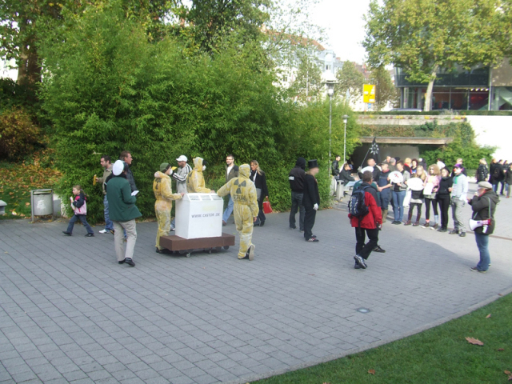

In wenigen Tagen rollt wieder ein Castor-Transport in Richtung Gorleben. Gerade erst vor wenigen Tagen beschloss die Bundesregierung, wie schon lange abzusehen war, die Laufzeitverlängerung für Atomkraftwerke.
Dass es genügend Gründe gegen Atomkraft gibt, jedes einzelne Kraftwerk ein unkalkulierbares Risiko darstellt und dass die Endlagerfrage keineswegs gelöst ist wird oft genug belegt und wiederholt. Ein immer größer werdender Teil, der hier lebenden Menschen sieht das sogar inzwischen ein.
Dennoch wird aus politischen und vor allem wirtschaftlichen Interessen weiterhin daran festgehalten, dass wir Atomkraft brauchen würden, zum Klimaschutz, um nicht vom Ausland abhängig zu werden. Als „Brückentechnologie“ bis regenerative Energien uns versorgen können und so weiter. Doch in Wirklichkeit sind diese Argumente Lügen, bestenfalls Unwissenheit.
Atomkraft ist weder Sauber noch CO2-neutral, beim Uranabbau werden Unmengen von CO2 erzeugt, zudem werden ganze Landstriche verseucht, Arbeiter, die großteils zudem einfach im Unwissen über die Gefahren gelassen werden, verstrahlt. Ganz zu schweigen von dem radioaktiven Müll aus den Kraftwerken, der irgendwo sicher gelagert werden muss, für Millionen (!) von Jahren.
Zudem sieht es in der Realität so aus, das gerade die Atomkraft die Weiterentwicklung der regenerativen Stromerzeugung stark behindert!
Aus diesen Gründen wird der Castor auch dieses Jahr nicht widerstandslos rollen. Im Gegenteil der Widerstand gegen den Transport droht stärker den je zu werden!
Auch hier in der Gegend schläft er nicht, so gab es am Castor Aktionstag, am 23.10. auch in Aschaffenburg, neben einer Demonstration der „Friedenstrommler“ eine Aktion, bei der ein „Castor“ in Form eines Theaterstücks durch die Fußgängerzone geprügelt wurde, gegen den Widerstand von „Blockierern“. Bei dieser Gelegenheit sollte die Aschaffenburg Bevölkerung darauf aufmerksam gemacht werden, dass es sich keineswegs nur um ein Problem, das „die da oben“ im Wendland haben, sondern das der Castor wahrscheinlich sehr wohl auch in unmittelbarer Nähe vorbeifährt. Schon mehrfach fuhr er durch Mainaschaff, dies ist auch in diesem Jahr nicht unwahrscheinlich (theoretisch wäre es sogar möglich, dass er hier durch Miltenberg rollt)! Zudem wurde für eine Infoveranstaltung geworben.

Von Seiten der Polizei wurde wieder auf Kriminalisierung gesetzt, was zum Castortransport ja in der ganzen Bundesrepublik zu beobachten ist. So wurde den Aktivisten die Aktion erstmal verboten, mit der Begründung, sie sei nicht angemeldet. Nur in unmittelbarer Nähe eines angemeldeten Infostands zum selben Thema wurde die Aktion zugelassen, aber von zahlreichen (und teils bekannten, teils sehr auffälligen) Zivicops beschattet, dennoch kann die Aktion als voller Erfolg gewertet werten, in Verbindung mit dem Infostand konnten offensichtlich viele Menschen erreicht werden.
Bericht auf Indymedia
Bei der erwähnten Infoveranstaltung am 28.10. in Aschaffenburg zum Castortransport zeigte die Polizei, was ihre wirkliche Funktion ist, nämlich alles was nicht ins Bild passt zu überwachen und zu kriminalisieren. Hier wurde aber ein schöner Weg gefunden damit umzugehen:
Bericht auf Indymedia
Nächstes Wochenende rollt der Castor! Also heraus, auf die Straßen, auf die Schienen! Schottert im Wendland, setzt euch in Berg! Vielleicht noch zu beachten, der Castor rollt womöglich auch fast an der eigenen Haustür vorbei, nämlich in Mainaschaff!
Nicht nur den den Müll stoppen, auch das dazugehörige System in Frage stellen!
Gegen Atomkraft und Kapitalismus!
Für eine herrschaftsfreie und unverstrahlte Zukunft!